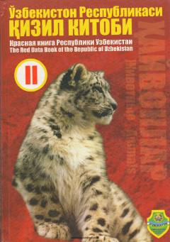

ORO'zbekistonning noyob va yo'qolib borayotgan hayvonot olami turlari haqida rasmiy ma'lumotnoma.
O'zbekiston Respublikasi Qizil kitobining ikkinchi jildi hayvonot olamining noyob hamda yo'qolib ketish xavfi ostidagi turlari, jumladan umurtqasizlar, baliqlar, sudralib yuruvchilar, qushlar va sutemizuvchilar haqidagi ma'lumotlarni o'z ichiga oladi. Kitobda har bir turning maqomi, qisqacha tavsifi, tarqalishi, yashash tarzi hamda muhofaza qilish choralari bayon etilgan. Asar tabiatni muhofaza qilish xodimlari, zoologlar va keng kitobxonlar ommasiga mo'ljallangan.